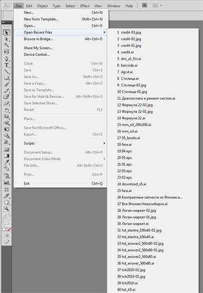

Увеличиваем список Recent Files
Sancho / 24.09.2010, 14:50/00:41
Форум:
Не помню уже сколько там по умолчанию, но как то очень мало :)
Для того что бы увеличить список, необходимо найти файл настроек под названием AIPrefs. В Win7 он лежит по следующему пути:
Для того что бы увеличить список, необходимо найти файл настроек под названием AIPrefs. В Win7 он лежит по следующему пути:
\Users\ЛОГИН\AppData\Roaming\Adobe\Adobe Illustrator CS5 Settings\en_GB\...
Закрываем Иллюстратор.
Открываем AIPrefs в блокноте.
Через поиск находим строку maxRecentFiles и меняем число которое там написано. Я поставил 100 и в итоге у меня получилась строка следующего вида:
/maxRecentFiles 100.
Сохраняем файл и запускаем Иллюстратор.

© Copyright by Sancho
Запрещается копирование и публикация материала на других сайтах без письменного согласия автора.
No part of this story can be copied/pasted on any other website without the author's express written permission.